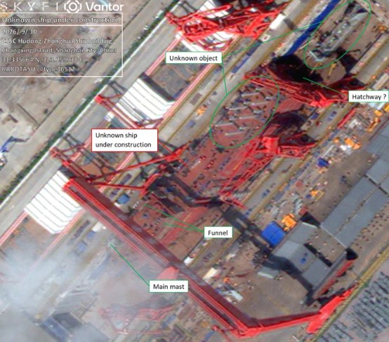
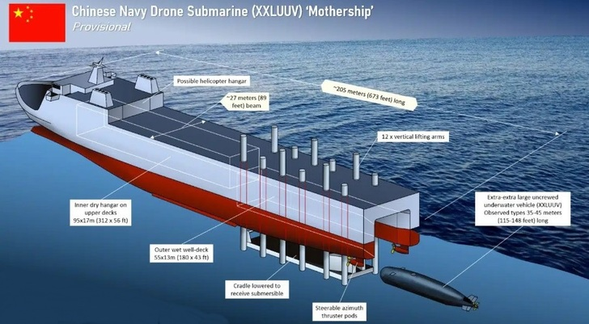
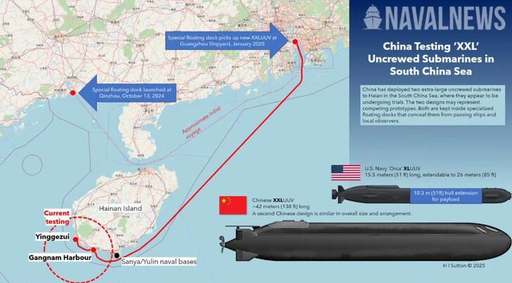

2026-09-21T12:00:50
楼上的能不能提供一下出处，比如相关的数据及报道？
博主《龙行天下》提到的情况我遇到过类似的例子。例如孟晚舟被扣押后，博主在19年《八方论坛》《从华为案来认识美国》节目介绍了法国前阿尔斯通高管的书籍《美国陷阱》还通过观察者网的渠道请他们设法把这本书引进国内，后来华为任总确实读过这本书（https://news.sina.com.cn/c/2019-08-05/doc-ihytcitm6819417.shtml）。后来博主在节目里简单谈过几次，然后我在网上看到的评论则变成了博主“想要让”任总读博主自己的书，然后就有人回复不是博主自己的，是博主推荐的。这可能类似“曼德拉效应”那种？根据先前残存一些浮面的印象事后不去确认而是拼凑出一个与事实不符的虚假记忆。
博客追求90%的預測正確率，有兩個重要考慮，其一是事先做預測、接著事後做檢驗，原本就是Bayesian思維原理的基本步驟，也是科學方法的運作典型。其二則是我在本月《龍行天下》所提的分工：博客專注在駁斥專業程度相對較高的狡辯騙術，但專業論證不一定能被讀者徹底理解，這是因爲即便後者有著求真的意願和態度，專業壁壘依舊是客觀的艱難障礙；所以我必須建立公信力，以方便非專業讀者采信博客論證。那些懷抱仇恨而詆毀博客的人，用意正在於摧毀上述的公信力，其後果就是在他們沒有直接攻擊的核聚變發電、量子計算等等專業議題上，也削弱了實話的影響力。剛好他們的謊言是低級的，一般讀者也能簡單反駁，所以求真打假的分工合作特別重要。有些博客讀者因爲沿Dunning-Kruger曲綫走下笨蛋峰代表著認知成長到能夠產生自我懷疑（D-K曲綫的縱軸正是自信和發言意願），因而不想隨意發言，但D-K曲綫的橫軸（亦即認知程度）其實隨議題而變：在專業性高的議題上，或許還在中央谷底，但在真假可以簡單分辨的事項，卻已經可以算是登臨“正解峰”（亦即D-K曲綫右邊的高峰，對照著左邊的“笨蛋峰”）的人，這時就應該盡Intellectual的社會責任，主動積極地發聲抨擊騙子和蠢蛋。
假使未來實現AGI通用人工智慧或是基因改造人技術，這類科技讓人類變得更好的機率是很低的，具體要看控制在好人或壞人身上，因為自私的人比好人更多所以權力和能力越大風險也越大，人類智商分布不平均導致少數人統治多數人成為必然，不論是資本主義民主的寡頭統治還是獨裁
人類的生物學特性導致愚蠢的從眾效應、聽信謠言謊言；智商分布不平均，導致少數人統治多數人，導致民主成為不可能或是寡頭統治控制媒體被資本寡頭幕後操控。獨裁偶爾遇到幾個明君，且也要依賴官僚只要是官僚階層體制就有信息不對稱底層和上層無法溝通和理解順暢傳遞信息，長期統計概率上會成為自私的制度，所以古代王朝平均壽命只有300年，如果核戰爭風險、全球暖化、生態災難、貧富差距不可能解決，人類300年內自我毀滅的概率是很大的，宇宙很大必定還可以演化出人類這種生物和文明但離我們太遠人類根本不可能從頭來過，但地球生態系的食物鏈、生態棲位被人類卡住已經浪費了時間。但人類從幾百萬年老祖先演化一開始就走錯路徑了。
因為愚蠢和自私疊加的效應人類社會存在劣幣驅逐良幣效應，好的未必能夠傳播、繁衍，壞的倒是無限循環。
人類還有損人不利己的特性，對誰都沒好處的蠢蛋做的就是這種事情；還有具有對人類整體有優勢的利他主義基因和高智商，未必在現代複雜社會能夠傳播。人類會透過貧富差距、民粹主義、非理性主義、從眾效應等機制毀滅自己。
拿西漢、東漢、唐、宋、明、清等王朝覆滅來類比人類的國家政權存在300年左右的國家或政權生命周期性循環雖然不是「王朝覆滅＝人類滅絕」。當然兩者不是同一件事。我想說的是人類社會本身就存在貧富差距、土地兼併、權力集中、政治腐敗、社會矛盾累積，最後爆發危機的長期循環。以前這種循環最多摧毀一個國家或一個文明的一部分，現代全球化之後，整個人類文明已經高度互相連結。更重要的是，人類現在第一次擁有了核武器、全球工業體系，以及能大規模改變氣候和生態環境的科技。以前就算一個皇帝昏庸、一個王朝腐敗或是寡頭自私，也不可能按一個按鈕就讓幾十億人的文明面臨核戰爭，也不可能在幾十年內把整個地球的生態系統推到新的狀態。
只要每年有1%的小機率發生，幾百年下來就幾乎一定會發生會變成統計上的柏松分配
这篇文章里博主在24年8月答游客越雷的话里就提到了：“怎麽會有Trump上任=>烏克蘭立刻投降的想法？博客早就説過，Trump若是2025年上任，對俄烏戰爭的影響應該類似2017年的TPP：亦即美國單方撤離，盟友留下繼續苦撐。”考虑到特朗普是25年一月再度正式上任的，博主此前就特意否决了特朗普上台后乌克兰会立刻投降的观点，还提到：“歷史性崩潰的時間點如同地震，當然是不可能事先精確預測的，但目前粗略估算，2025年後半到2026年的可能性最大，尤其是2026年前半。”这里也明确表示，乌克兰局势历史性崩溃的时间节点是无法精确预测的，只能给出粗略的估算。同时25年3月答 AbzX5时提到：“ 如果遇到討論“俄烏戰爭可能即將結束”的名嘴，就可以打上“傻逼”標簽，從此忽略。” 这哪像是说25年年底俄乌战争就会打完的样子？
Fanboy參與過留言欄討論嗎？用的是什麽賬號？
【後註二十七，2026/09/18】今天的《龍行天下》節目中，我提到這次美國期中選舉的大金主一面倒地支持Trump，出處是《US billionaires line up to bankroll Republicans election push》，供大家參考。
【後註六十四，2026/09/18】今天《龍行天下》節目中所提的，最近這個月Ratcliffe/Kushner/Witkoff穿梭外交的真實用意在於要求俄烏停止攻擊對方的煉油設施，想看原始信息根據的人可以參考Trump在9月13日將柴油價格暴漲怪到Zelensky頭上（參見《Trump calls on Ukraine to halt strikes on Russian diesel fuel, citing a global shortage》），然後在9月14日很高興地宣佈俄烏能源停火、所以柴油即將降價（參見《Ukraine and Russia have agreed an energy ceasefire, claims Trump》）。
【後註十五，2026/09/18】今天上《龍行天下》談油價，提到曾因爲此前的原油市場對和平解決太過樂觀而建議小孩買美國能源股的ETF，出了一個錯誤，我以爲是在7月節目中討論的，其實是在更前一次討論美伊戰事的3月節目（參見《油价大涨对全球金融经济的三层影响，日本最受伤害》以及節目尾端的觀衆問答；《UDN》不允許鏈接有特殊字母，博客鏡像正在需求解決方案）裏簡單提及。年紀大了，記性不好（尤其幾個月前草稿裏的論點，到了節目中有時間壓力，往往不能説全，卻一樣留存腦中，特別容易引起記憶混淆），特此致歉。恰好3至7月間那隻ETF基本持平，6個月和最近2個月的回報率同樣是25%。
近年来大陆的旅游业很火爆，部分地市政府跟风修建了很多复古景点，比如湖北的赤壁古战场、夷陵之战古战场、荆州古城等等，这些景点每年到访的游客寥寥无几，严重亏损。请教王老师：类似这样的项目，在启动之前是不是也要遵循工程管理原则？即严论证！尤其是从可行性、投入产出上进行论证。
领导在拍板上马这些项目的时候犯了您常说的逻辑错误-把类比当成因果。领导们给出的理由是襄阳的古隆中景区非常火爆，那么赤壁和夷陵类似的景点也应该火爆。
這裏的解決方案，可以從資本主義市場經濟體系來借鏡：大型商業房地產投資由房地產商主導、銀行負責融資審查；這並不防範事前一窩蜂的過度投資，但事後房地產商和銀行都有破產的懲罰（假設沒有進入高等金融；非標準衍生品的危害之一，就是解除了做出和批准錯誤投資決定者的責任，而通過共同基金和養老基金、將損失轉移給懵懂的大衆）。中國的體制先天決定了不同的投資決策機制：地方官員負責主導、省部官員負責審查，所以正確的處置很明顯，亦即賠錢就要負責，嚴重的直接罷官，附帶責任更要一路追究到省委書記的級別。
关于下大棋这种论调比较典型的几个案例，比如2020年曹大佐（清华大学土木生曹丰泽）在知乎帖子《如何评价“朝阳区十八里店新添138亩良田 建设老百姓菜园”一事？》中表示：至于这138亩地，它究竟是用作耕地、湿地还是森林，这是北京市设计单位海量的顶尖技术人员计算设计出来的，他们当然比我懂，更比你懂。我唯一可以明确告诉你的是，为了北京城市的存续和北京市民的生存，这138亩唯独不能盖成房子。结果后来官方通报（https://ysxw.cctv.cn/article.html?item_id=6622905515358796108）当时负责北京规划的原北京市规划委员会党组书记、主任；北京市委常委、副市长陈刚以权谋私给自己规划了109亩的私人园林，所以不知道是哪些专家精确计算认为这109亩私人园林是怎么关系北京的存续和市民生存的？还有21年下半年拉闸限电，就有人揣度是上面在下大棋，是在对外输出通货膨胀，淘汰落后产能，倒逼我国产业升级，搞得官媒央视网（https://opinion.cctv.com/2021/09/28/ARTIM6zbrTVs94vrfivx4sUE210928.shtml）不得不下场澄清，指责这伙人是“低级红，高级黑。” 现在有一个很直观的问题就是女权泛滥，这不是单纯有捞女，而是官方在系统性的偏袒，近几年的无锡蛋糕店老板被诬告，重庆胖猫跳江，成都地铁偷拍案（追风小叶那个，扩大影响系男方责任），胖猫一周年（经得起历史考验，人民检验，不要乱上添乱），大同订婚强奸案，武大诬告案（不要因为你的正当行使权利,而造成他人不利的后果），更早的南昌锜振东案，山东房洪钢案。按照某些人的观点你都看得出来有问题，那上面难道看不出来吗？那同类问题持续反复出现，却鲜见有效的内部纠错，反而愈发糜烂起来，那不就说明上面不仅知道，而且是有意纵容默许吗？又按照某些人“大内自有高人”，“政治怎么可能这么简单”，“国家机器怎么可能像你说的那样简单？”的论调，那政府这么做肯定是有理由的。女权问题爆发开始（我个人是19年注意到的）很多男同胞就希望政府能够一碗水端平，严肃对待，但是现在来看系统性偏袒愈发明显，如果按照某些人的观点——官方=正确，那不就是国男总是错的，小仙女总是对的。你要是婚恋被爆金币了，要是被女权诬告了，比如追风小叶、武大肖同学，那你怎么办？那你活该呗，没办法就是没办法，遇到了就是遇到了，算你倒霉。毕竟这系统性偏袒的背后难道不也是政治的一部分，不也是国家机器运转的结果，不也是官方的意思，而你只是一个普通人，没有资格质疑权威，化用老拜登睡王的话，“你不能只在政策合你意的时候，才标榜政府权威”。
我原本以爲最基本的謊言和蠢話可以直接跳過，博客應該專注在駁斥狡辯、尤其以專業知識為掩護的狡辯上，但十幾年下來，像是“阿波羅地月通信零延遲”這樣的低級謊言反而越演越烈，論壇上一面倒地讚，必須由我第一個站出來批評。讀者群如果真的在乎真假對錯，不必在博客留言列舉，而應該到《觀網》這類還有點水準的平臺去撥亂反正才是時間精力的最優運用。
（3）則反映了資本家的自私自利，這也應該不算新聞。
（4）本世代AI已經是黑箱，要對更進幾步的AGI强加“機器人三定律”之類的底層禁制，根本不可能絕對保險，失控不是“大概率”、而是必然。
中国工程院彭先觉院士、李建刚院士和邓建军院士研究团队在中国工程院院刊《中国工程科学》2024年第4期发表《聚变能源研究态势及展望》一文。谈到了核聚变研究中的问题以及推销自己的研究方案。https://mp.weixin.qq.com/s/mbD31-99pGLFc2TkS9lcpA
【後註九，2026/09/16】昨天《Naval News》引用日本軍事博主所發表的商用衛星照片（參見《不明船舶が建造中》；見下圖一），將一艘正在上海滬東中華造船廠建造中的新型船隻還原出來（參見《China’s New Giant Submarine Drone Mothership》；見下圖二），發現這應該是超超大型無人潛航器母艦XXLUUV Mothership，全長>~205m，寬~27-30m，約與071型登陸艦一般大小，可以估算其排水量為2萬多噸。這裏的創新在於其後部的内藏式升降機，收放極爲方便；這個升降機的尺寸被估計為55m*13m，已經非常接近能容納傳統常規潛艇的大小（例如德國212A型長56m、寬6.8m，參見《Type 212A submarine》)，但最可能是為去年在海南被觀察到的XXLUUV（參見《China Moves Two Super-Sized ‘XXL’ Uncrewed Submarines To South China Sea》；見下圖三）而設計，該潛航器長42m，排水量約750噸，在母艦的前部船塢中可以容納4-6艘。



這裏我只簡單談一談NS問題：首先，OpenAI明顯剽竊了另一個團隊的洞見，憑著公司在算力上的絕對優勢，將對方可能需要幾個月甚至幾年的研究時間壓縮到一周，從而搶先發表。而這次OpenAI能如此輕鬆地剽竊，正因爲傳統數學人（除個別例外）有職業道德規範，一般不會去剽竊，所以也無須防賊；如果數學研究被無道德的AI取代，那麽公開交換洞見成爲不可能，不但OpenAI式的剽竊突破無從搞起，創新速度除了AI本身的弱勢之外，還要在分工合作的效率再打一輪折扣。其次這個解恰好是反例證僞，所以不需要嚴謹邏輯。
【後註六十三，2026/09/15】【後註六十二】所討論的烏克蘭政治鬥爭，最終當然必須是美國直轄代理人勝出，所以總檢察長Kravchenko辭職下臺的消息（參見《Ukraines prosecutor general resigns as call centre protection case reaches his office》）可以説是完全在情理之中。然而他在逃亡立陶宛（參見《Ukraine’s Prosecutor General Leaves Country Amid Anti-Corruption Showdown》）之前仍不忘反手一擊，指控NABU首腦Semen Kryvonos曾犯下貪腐和僞造文書罪（參見《Prosecutor General Ruslan Kravchenko publishes notice of suspicion against head of anti-corruption agency》）。烏克蘭政客撒謊成性，博客已經做過無數次列舉，但這裏狗咬狗的互相揭瘡疤，卻應該屬於極少有的實話例外。
还有最近您似乎错字有点多，这里的八卦，还有《对俄乌战争的新观察》的后注六十的卷款跑路也是，是最近精力有点不济吗？既然提到错字，我就顺便提一下对《咬文嚼字》后注2的看法，实际上金发碧人的标题在当天就改回了璧人，看起来只是单纯的错字，并且我对观网编辑群体为什么错字频发有个简单的解释，就是因为中国的互联网文化发达，所以很多传统实体转向线上时一开始会直接从互联网招募人员，导致素质良莠不齐，您多次批评的席亚洲实际上也是这个原因，他原本是玩论坛的，我第一次了解到这个现象还是看LOL国际大赛知道的，解说极其不专业，原来也是从互联网社区找的草根。
之前我在B站刷到在朝鲜留学女生的vlog，她们在平壤的KTV里唱的歌居然也是《老公赚钱老婆花》，我就知道捞女现象有多严重了。高额彩礼应该算是计划生育的遗留问题之一，实行计划生育之后尤其是农村地区生男孩比例明显高，加上改开之后农村女性大量进城（适合女性的工作大多在城市），农村女性供不应求，导致高额彩礼出现，一旦出现，女生的家长也会开始攀比，比别人低就是吃亏，不尊重。
P.S.最近镜像网站增加了观网留言记录，我才发现您还在观网回复人，看到了您在9月4日回复说那个日本公司的解说的FAQ2（出口五轴机床给中国是否需要许可）里有“Individual licenses are default ”所以是2025年日本才开始对五轴机床出口预设个别审批。实际上原文Individual licenses are default后面跟着写道After 9 October 2025 catch-all strengthening, even non-listed tools can need applications，很明显意思是说2025年加强普通机床出口管制之前，五轴机床出口一直处在管制下，个别审批是预设。日本人说话喜欢省略主语和宾语，意思常常靠上下文传达，因此翻译容易出错，不过这里无论是机翻英文还是机翻中文都能读出原本的含义吧？
《咬文嚼字》的後注二是一個博客少有的特例：它屬於佔文字總數不到1%的“明顯無關公益的閑談”類別，因此我可以放下日常的嚴謹態度，挖苦調侃了我在《觀網》的編輯朋友。他們錯別字特別多的真正原因，當然是總編輯不在乎、沒要求。至於那個“璧人”，現代中文只有“一對璧人”的用法，根本不可能是作者的原意；他腦筋一時短路，把“碧眼”用在人身上，卻意外撞上“碧池”這個最合理的答案，本身就是個很好玩的巧合，讓我忍不住要開這個玩笑。此外也可以看看他是否采納我的建議，用“璧人”來脫困，事後證實的確如此。
《觀網》留言既不能改、也不能刪，然而我在博客養成的壞習慣是直接在網站上寫作，然後再反復刪改、修飾，你看到的“錯別字少”，是多次復查改正之後的最終結果。這次確有不慎，沒想到《觀網》留言政策的差異，有些語言細節事後覺得不妥，但也無法扭轉；若要多寫澄清又沒有讀者、反顯突兀，只能當作一次教訓，以後必須更加謹慎。與此同時，讀者可以繼續將我在《觀網》的留言視爲正典Canon，不過是低於博客本體、與視頻同等的級別，原因是其内含難以回頭更正的口誤/筆誤。
順便再討論一下這次的NS解：這些世界頂級的數學大難題，除了少數例外（尤其是Riemann假説），其本身的真假往往沒有太大意義，例如Perelman所證明的Poincare假説，至今23年，並沒有什麽直接引申出來的重要後果；數學界真正珍惜的，是Perelman所發明的分析方法，亦即Ricci Flow，不但在相關領域開創了更深一層的認知，也被廣汎用來研究類似問題。所以AI最擅長的、也是這次NS問題所對應的反例證僞解，其實對數學界來説，是一個大大的失望，因爲既沒有新的分析方法，也沒有更深層的認知。更糟糕的是，從博客討論的AI長處/短處來看，上面的失望並非偶然：AI只是剽竊/復述既有文獻，那麽就不會有新發明的分析方法；AI的邏輯嚴謹性不過關，那麽寫出來的正面證明必然是一團漿糊（人寫的證明也可以是一團漿糊，例如日本數學家望月新一在2012年發表論文，宣稱證明了ABC假説，至今仍然處於既未被解讀接受、也沒有挑錯證僞的薛丁格狀態），更別提什麽深層認知了。陶哲軒的評論（參見https://mathstodon.xyz/@tao/117207849921390904），很多人看不懂，以爲他在酸葡萄，其實是上面那個意思。
菲律賓是一個典型的失敗國家，奉美國主子的命令來碰瓷。美國周邊也有很多失敗國家，例如海地等等，這是它作爲殖民霸主有意創造出來的“安全”環境。相比之下，中國並非菲律賓治理失敗的原因，造孽的還是美國，但中國可以免責享受無威脅的好處；又因爲它在美國驅使下，自願成爲反華先驅，中國連援助/關懷的義務都沒有，遇到能源危機，還可以直接切斷油品供給。換句話説，菲律賓主觀上很煩人，但客觀上卻是極佳鄰居，應對起來也極爲簡單，直接無視即可，連正眼都不用給。近年西方流行一句話“China does nothing; win"“中國不作爲也照樣贏”，這裏倒是真正適用，而且符合官僚體系的怠惰習性，應該不成問題才對。
前一段时间的研究显示目前的AI无法独立“重新发现”广义相对论（就算拥有相关的数学知识），这说明目前的AI确实缺乏溯因推理和物理直觉，但是把现有的知识进行组合的归纳推理是其擅长的领域。
First Principles（第一原则）指的是事实的认定标准不能违反下面三个原则 1、極爲基礎；2、可靠性全無疑義；3、已知的。 欧美媒体经常撒谎，所以不符合 2，他们的报道要经过核实；猜测、假设属于未知的部分，不应该当作事实。王老师不知道我的理解对不对？
你對科技部的批評，切中博客想要傳達的重點要害。
【後註三，2026/09/13】這是兩個月前的新聞，但我剛剛才注意到：根據《Bloomberg》在7月15日報導（參見《Pentagon Blocks Watchdogs Review of Costly F-35 Program》），Hegseth發現GAO（United States Government Accountability Office，美國政府問責署）今年對F-35項目貪腐低效的批評比往年更加嚴厲（例如缺乏備件，以致全功能可用率Full Mission Capable Rate在2021年是38%，2025年降至25%，可想而知今年的數字原本更慘，而國會要求65%，並剛在去年額外撥款給Lockheed以做改進，整個五年計劃叫做“Global Support Solution Reset”），於是下令將該報告徹底封禁（Hegseth正在向國會申請，將F-35項目的逐年撥款審查自2028年起轉給一次性授權的巨額空白支票叫做“Working Capital Fund”，由戰爭部自主決定發多少錢給Lockheed，因而這份GAO審計報告尤其尷尬；有關WCF，參見《Navy Working Capital Fund (NWCF)》和《F-35 Sustainment: Actions Needed to Ensure Updated Strategy Improves Persistent Readiness Challenges》）。此事的重要意義在於（1）美國軍工體系的腐敗程度仍在日益惡化；（2）美國政治體制的監察力量極其微弱，可以由被查單位一紙公文簡單壓制打發。
【後註五，2026/09/12】自從2010年Denisovan在俄國西伯利亞被發掘出一根指骨，從而通過DNA分析證實為新的古人類物種之後，又有幾次化石發現，全都發生在中國境内，分別是根據甘肅夏河白石崖溶洞化石發表於2019年的論文《Biggest Denisovan fossil yet spills ancient human’s secrets》、來自澎湖海域論文發表於2025年的《A male Denisovan mandible from Pleistocene Taiwan》、以及【後註四】所討論的黑龍江“龍人”頭骨。三天前的《自然》又添一新發現（同批兩篇論文分別是《Ancient proteins identify various Denisovan remains from Southwest China》和《Denisovans from southwestern China and their subsistence strategies》）：雲南鶴慶蝙蝠洞出土了大批石器、動物殘骸、以及古人類遺骨，後者經蛋白質分析證實來自三名丹尼索瓦人（參見《蝙蝠洞里的意外发现，首次揭示中国南方丹尼索瓦人生存全景》和《Newfound fossils are spilling Denisovan secrets》）。這裏的重要科學意義在於（1）首次發現頭顱之外的大型骨骼（postcranial remains），顯示Denisovans體型不似Neanderthals壯碩，反而更接近智人；（2）獲得遠超以往的Ecofact生態遺存，從而瞭解Denisovans的狩獵和生活習慣。
【後註六十二，2026/09/05】本周的基輔實在太熱閙了。今天衆所周知由美國國務院和CIA聯合直轄的烏克蘭反腐調查局NABU/反腐檢察處SAPO宣佈啓動最新調查（參見《NABU searches Prosecutor General Kravchenko’s office in probe into criminal group protecting scam call centers》），指控總檢察長辦公室包庇若干電詐中心，並以暗殺/逮捕等手段打擊競爭對手（參見《龍行天下-2026/07》；据估算，烏克蘭共有約2000家電詐中心，每月總利潤約爲十億美元，參見《Ukraines scam call centres earn $1bn a month, study finds》）。烏克蘭總檢察長Ruslan Kravchenko公認是Zelensky貪腐集團的一員，而Trump每次要和Putin議和，就必然指令NABU調查Zelensky派系官員來對他施壓（參見《龍行天下-2025/11》），剛好今天正是由CIA總管John Ratcliffe在一周前打前鋒（參見《C.I.A. Director Makes Secret Visit to Moscow》）安排好的新一輪穿梭外交的第一天（參見《Putin Meets Witkoff and Kushner in Moscow to Discuss Ukraine War》），所以一切合情合理、脈絡清晰。不過【後註六十一】所討論的劇烈槍戰至今只有三天，而SBU屬於Zelensky/Kravchenko系統，GUR卻是總統辦公室主任Kyrylo Budanov（CIA嫡系，繼任總統的熱門人選之一）的親兵，所以難免有傳言說那場火拼其實是同一場政治鬥爭的前奏；不過暫時沒有明確證據，有待繼續觀察。
【後註二，2026/09/05】美國知名財經主播兼Trump迷妹Maria Bartiromo剛剛被《Fox News》解雇（參見《Fox News abruptly ousts Maria Bartiromo, a longtime Trump ally》，原因是她做了一個新專輯來闡述Trump在2020年敗選後說中國收買自媒體“干涉選舉”的指控，而《Fox News》曾因爲報導Trump對民主黨“選舉作弊”的指控而在2023年被判賠款7.8億美元，其後内部嚴禁任何有關2020年大選所謂弊案的敘述；原本這個封口令似乎有違憲法第一修正案，還有打官司的餘地，但Bartiromo很不智地聯係白宮對《Fox》施壓，於是後者轉以“泄密”爲由直接開除。總結來説，是美國媒體界的MAGA信徒想要支持Trump對中國的抹黑，但她的雇主因爲上次抹黑民主黨被後者用法律系統打服了，所以直接解雇解決。中國的鍋因美國黨爭而起，也因黨爭而終，這個故事真正揭露的是美國政壇和媒體的真面目。
撈女現象在全世界遂行"自由戀愛"婚姻的地區都有，但中國確實特別常見而惡劣。我剛開始寫博客並關注大陸民情的時候，就對巨額聘金的習俗大吃一驚，因爲這與自由戀愛的底層邏輯（亦即男女平等）相矛盾。後來兒子開始交女友，我也曾多次建議他試著與中國女孩接觸，但他的反饋一直是她們太過功利庸俗，滿腦子只想著花錢享受，毫無文化和理想，連印度女孩都不如（我曾考慮或許會選擇來美國讀書並定居的，就已經被幸存者偏差過濾過了，但其他國家的移民卻並無這個問題）。不過此事如上所述，對公益總和影響較小，而且有受害者（年輕適婚男性）自己慣出來的部分因素，我想將其歸納為内捲現象的一小分類，不另做專注；所以除非讀者有與公益相關的洞見，此綫到此爲止。
大陸人文教育在“求真”上的徹底失敗，並反向加强詐騙意向和伎倆，是博客的老話題。幾年前，曾有關於中學國文老師詳細教導如何編造僞托的留言討論，把我嚇得不輕。當然，當代的美國也是Fake it until make it心態橫行，但其源頭在於商學院、尤其是MBA，中國的詐騙培訓卻從中學就開始全面普及深化，雖然有實體經濟强迫面對物理現實來稍作彌補，但長久下去，市場的獎懲機制必然會導致詐騙壓倒產業，事實上連物理科研都已經被明顯腐蝕，核聚變發電和量子計算正是掏空公益的典型案例。
【後註六十一，2026/09/04】兩天前，烏克蘭的兩大情報機構（SBU國家安全局和GUR國防部情報總局）手下的精銳特戰部隊在基輔市區展開激烈巷戰，火拼一個多小時（參見《Kyiv Shootout Between SBU and HUR – What We Know》），深層原因衆説紛紜，但可以確定導火綫起自前者逮捕了後者所轄俄奸部隊RDK俄羅斯志願軍的高層領導。因爲戰鬥發生在衆目睽睽之下，Zelensky不能以撒謊解決，只好不痛不癢地批評幾句（因此才有個別西方主流媒體做出極簡略報導，例如《Ukraine war briefing: ‘Shameful’ – Zelenskyy furious after shootout between Kyiv’s spy services》）。然而事件並未到此結束：今天一架載彈量50千克級別的長程無人機（俄烏雙方都批量裝備使用，雖然後者才視其為打擊主力，前者主要將其用做誘餌）襲擊了SBU總部大樓（參見《Here they are firing: A drone at the SBU building in Kiev was not launched by Russians by 500% — Mosiychuk》），GUR立即宣稱無人機來自俄方，但奇妙之處在於Putin素來不喜攻擊烏克蘭政府機關，SBU大樓在開戰四年多以來還是首次受損。
【後註六十，2026/09/03】Estonia國防部長Hanno Pevkur剛剛辭職，原因是他將歐盟撥給Estonia用來購買炮彈支援烏克蘭的7000萬歐元，匯給一家印度公司作爲預付款，然後該印度公司就捲款跑路了，參見《Estonias defence minister resigns amid scandal over ammunition purchases for Ukraine》；文中並未解釋、歐盟也不追究他爲什麽要挑選一家沒有認證、沒有歷史的印度空頭公司，完全符合西方票選制下，去職即免責的傳統設定，特別方便財閥代言人輪番侵吞公益。
人口如果不能自由流動，就等於以社會主義的形式，包裝了一種中世紀封建農奴制的制度。因為人口自由流動本身就是提高生產效率的重要條件。
想想現代資本主義與中世紀封建制度最根本的差別之一：中世紀的農奴與土地綁定，人被固定在土地上，封建爵位世襲，農奴也不能自由離開所依附的土地。如果現代社會主義的一個國家的國民連戶籍自由遷移都被行政權力限制，那麼與中世紀的封建制度其實也有很多相似之處；相同的地方在於用行政權力把一個人的權力固定在某一個地方，不同的地方是限制沒有那麼強的限制，是一種弱限制，人口還是可以隱性遷移到大城市去打工，只是缺乏完整的權利，例如教育和社保福利等等。
至於當初城鄉之間的限制和隔離，所謂「公平與效率的矛盾」，在我看來，很多時候只是城市人口維持自身利益、當初努力影響官僚決策判斷、限制人口流動的一種說法被官僚所採信，最終讓普通農民和勞動者承擔制度成本。
工業革命之後，正是大量農村勞動力進入城市，才形成了現代工業化所需要的勞動力市場與最初的資本積累。可是當初政策反其道而行，經過半個世紀，又重新建立起某些具有封建特徵的人口管理制度，甚至包裝成「社會主義」。好在後來官僚晚了幾十年反應過來逐漸取消限制，在同一國家的國民戶籍遷移自由不該有特權這點上有人會反駁「公平和效率有矛盾」但我認為沒有矛盾戶籍自由國家工業生產的整體效率和資源配置是提高的
當初戶籍限制時有人反駁認為人口自由流動會造成房價上升農民工會壓低城市人的高工資，以及教育、醫療等公共資源的壓力，因此需要限制人口流動。但在我看來，這其實是把公共資源分配不均的問題歸咎於人口流動本身，然後賦予當初的城市白領一個特權等他們的階級固化以後再開放戶籍移動要改革可就難了一個數量級。人口流入確實會增加住房和公共服務的需求，但這並不能成為限制人口自由流動和剝奪其完整權利的理由；如果城市因人口增加而出現住房和公共資源不足，更合理的做法應該是公共住宅Public housing體系的配套、完善教育醫療和社保對同一個國家國民的平等，而不是透過行政權力限制人口遷移。就像一個人被歹徒砍傷，問題應該在於追究歹徒(教育和社保制度和戶籍世襲掛勾)，而不是責怪受害者的身體不夠硬。
下面這部影片也解釋了這種戶籍制度的歷史由來和它如何過時，但是這種官僚反應遲鈍的晚了幾十年的代價，需要50年甚至100年的時間來彌補，類似教育制度的深遠影響可以長達半個世紀，因為加速擴大的城鄉貧富差距不會因為馬上取消而突然消失，代表往後更大的治理難度和代價。
https://www.youtube.com/watch?v=edd5oT6CKss
首先，在資本纍積尚未充足的背景下，放任佔壓倒性多數的農村貧困人口迅速自由遷入城區，必然會導致地方財政崩潰，以及貧民窟的普及，所以在改開之初維持戶口限制有其道理；然而到了2008年，中國已經加入WTO一段時間，想要進城的農民工已經大半被吸收消化，剛好因爲金融危機，胡溫政府準備投入十萬億級別的資金到地方經濟之中，這就是一個取消城鄉壁壘的完美時機，也正是我說“十幾年前”的考慮。
2022年实行的特定類型制度不是针对机床的，而是针对技术人员的，此前只要在日本住满6个月就算居民，向其提供技术不受限制，这之后无论是日本人还是外国人都必须审查是否受外国实体影响。实际上从1991年开始，随着取代巴统的瓦森纳协定和核供应国集团成形，日本就已经针对精度6微米以上的高精度机床进行出口管制了（就是我上一个回复已经给的链接https://laws.e-gov.go.jp/law/403M50000400049?occasion_date=20260214平成三年通商産業省令第四十九号）。此外，国内关于此事的报道全是自媒体，有不少甚至是个位数粉丝的垃圾号，唯一一个稍微沾点官方背景的报道是盐城贸促会的网站https://www.ccpityc.com/articles/998.html，开头给出的来源贸法通是中国贸促会（正部级）主办的公共资讯平台，但是贸法通公众号和小程序并没有相关消息，末尾则给出了另一个消息源贸易夜航，这也是个微信公众号https://mp.weixin.qq.com/s/R1ndZVA8RIN5m73_vN09Bw，但是上次活跃还是2024年，直到最近才开始发文。至于外语消息则全是中文消息的翻译，除了中国网和人民网日语版各有一篇独自报道（中文版没有相关消息！），我想这类网站的外语页面应该是外包的，很容易操纵，也不受国内关注。实际上，有日本人偶尔看到人民网日语版的报道都大感困惑https://note.com/trading_security/n/n4a70c880826b。不得不说，中国生意人和股票炒手操纵舆论的技巧已臻化境，中国政府与之相比简直还在幼儿园，还对此无知无觉，这是很危险的。2015年《中共国营企业的改革》您已经提过一次有人利用官媒散布消息来炒股的事件。2024年新京报调查记者报道的油罐车运输食用油事件（这事明明是堪比三鹿奶粉和苏丹红的食安事件）被很快转移焦点至“金龙鱼是否外资企业”“新京报是否公知媒体”等完全不沾边的事上，明显是有人利用大量自媒体矩阵进行舆论操控，因此此事草草处理，仅仅抓了几个涉事司机，对企业象征罚款了事，事后物流平台还下架了查询行车轨迹的功能。
中國文人編造謠言謊話的能力是真强啊，配合官僚體系和稀泥的心態，發掘真相有如逆水行舟，偏偏又事關國祚，良心人不得不努力。
有更新、更可靠的消息證據，歡迎討論。
看完後駐3，我網路上好幾十年長期觀察的現象是，謠言和謊言的傳播本身有這幾個機制三人成虎、人云亦云是其中一個機制，還有大網路名人和權威大眾(這種迷信可以是網紅甚至明星等完全對議題本身沒有專業能力的)會不加思索的採信，甚至還有一些更愚蠢的思維認知架構，認為所有網紅只要他能紅肯定是不簡單的因為他能賺那麼多錢肯定是聰明人網紅說得有道理
甚至網路暴力大眾都會不自覺參與，然後形成正反饋的循環大眾會不自覺地產生人越多越說越信，大眾會以為這麼多人都那麼說那肯定是真的，而不去調查原始事實或證據的來源和不合邏輯，他們只習慣聽說然後一傳十十傳百而不願意花幾十秒去證偽那個事實和邏輯，甚至有受害者被網紅發動群眾網暴到死
甚至網路平台本身也會刻意放縱這種效應的影響，因為很多網路論壇甚至是抖音這種大平台的審查員水平也不高，甚至因為網紅有流量利益也會放縱這些假訊息傳播，而且最近幾十年連年輕人的耐心也在衰退
1.老一輩的人看書看報紙偶爾看電視能夠有耐心把幾個小時的書籍或文章看完
2.中生代大約40歲的人只看YOUTUBE、B站這種十幾分鐘的視頻不喜歡讀文章，耐心已經發生小幅度衰退
3.年輕世代已經都是短影音、短視頻耐心只剩下10秒鐘 超過10秒鐘的東西沒人想聽
舉例：例如抖音文化如果一個視頻只有10秒鐘長度假設他初始能獲得10萬個讚只追求10秒鐘的爽感且這個視頻如果無法再投兩秒帶來爽感就滑走了，如果時間長度從10秒鐘提高到30秒他的按讚將會指數下降變成2萬個，如果視頻時間長度提高到1分鐘原本10萬個讚就會下降成只有幾千個贊了，並且那個10秒鐘的視頻流量如果妳去看發布者的後台數據流量隨時間的曲線下降後台會顯示頭2秒有80%流量，第5秒只剩下一半的人看，第10秒只剩下30%的人看 代表70%的人連10秒的耐心都沒有
長此以往如果有幾十億人都在做同樣的事情幾十年，大眾的大腦思維模式會被改變耐心會嚴重下降(主要影響年輕人大腦思維模式)，恢復不了1980年代那種能夠閱讀幾個小時報紙的耐心了，當然對閱讀任何科普知識、經濟政策邏輯、社科議題等需要超過10秒鐘的文章傳播不利
總結來説，凡是辯證因果邏輯所依賴的消息，都應該獨立搜索一次；如果是核心論點，則還要查看百科全書級別（亦即有復查機制）的資料庫；若是專業性高，則必須更進一步去閲讀原始論文。此外，搜索所得的結果，應該擇優以鏈接形式附加在論述之中，以方便他人復查或反駁。事實上，獨立搜索以及提供鏈接，正是嚴謹邏輯辯證的必然外顯特徵，即便沒有立即達成正確結論，也至少朝著真相前進一步；反之如果沒有搜索和鏈接，則基本可以判斷為胡扯，對應著99.99%的網絡言論。
这里描述的一种人类普遍的非理性心理机制，是否也是假未来科技等现象能够流行的背后原因之一呢
然而即便我這樣鍛煉60年的純粹理工邏輯思維，有時也會被“欺之以方”；問題出在“無限的智商也不足以跨越有限的信息差”，不信的話，你試著去買樂透看看；這也是“事實比邏輯更優先”的基本原因。
【後註二十，2026/08/31】三個月前，國務院宣佈廢除城鄉戶口壁壘，讓我頗感欣慰，畢竟多年前博客就批判過戶口限制是劫貧濟富、拉大城鄉差距的惡政，而中國的資本纍積早在十幾年前就已經發展到無需犧牲鄉下人來維持工業化脚步的程度。官僚體系的後知後覺固然可嘆，但如同取消一胎化的前例，這裏也是遲來的改革勝過不做。今天消息傳來（參見《房地产预售制时代终结，如何影响房价？》），房地產預售制度被大幅削弱至近乎取消的地步，又是一件雖遲但到、值得慶幸的正面進展。回憶博客幾年前的分析，預售制本質上是在賦予房地產商影子銀行的地位、可以獨自發行隱性的Forward衍生品，同時不受任何金融監管；這是保證會引發危機的極度愚蠢政策，如今終於叫停，所以這個決定表面上是經濟政策的修正，實際上是限制高等金融的一小步改革。希望官方能展現一點腦力和遠見，理解到恆大的教訓不只限於房地產業，而是反映了高等金融必然帶來的災難，從而根除隱患，不要繼續栽在金融資本所編造的謊言體系之中。
【後註六，2026/08/31】我在【後註三】討論了台灣工具機廠商早已被大陸本地產能所取代淘汰，但那代表的是中階產品，高階市場仍然在與歐日競爭之中，直到最近網絡上有人炒作日本產經省再度升級對“非夥伴國家”出口銷售和售後服務的限制，例如這個視頻評論（參見《Japan’s Machine Tool Ban Backfires Hard: China Cancels Orders & Surges Past 60% Localization.》；可靠性很有爭議，參見下一個段落以及留言欄28、29樓的討論），其論點在於工具機作爲流水綫的重要環節，采購的最優先考慮是可靠性，或者更精確地說，是對可靠性的印象；換句話説，日本廠商多年來維持市場份額，主要依賴歷史遺留的習慣和信任。現在買家被迫嘗試本土廠家的替代產品，不但幫助後者建立信任，而且由此劇增的使用數據正是進一步改進性能和可靠性的關鍵資源。如果上述敘事屬實，那麽日本的新政策是以產業自殺來完成對中方的重大利好，在國際上算是極度罕見的為戰略對手犧牲自我，上次發生還在5年前易綱的貨幣政策。
然而產經省在今年6月發佈、8月生效的最新正式公文《输出贸易管理令-改订版》並不含“工具機”一詞，而只是新增了8項其他產業進入限制名單，這是前述網絡傳言在細節舉證上的一個明顯錯誤。不過話説回來，最早的2022年版《输出贸易管理令》名單中的19項就包含工具機；2025年10月9日增補條例（參見《Deemed Export Controls Clarified and Machine-Tool Export Compliance: Five Points Japanese Companies Often Miss》）也的確要求事先逐項審批，照理説光是時間延遲和不確定性就足以勸退大多數買家，偏偏日本工具機廠商的股價並未受打擊（前述網絡傳言的又一錯誤），他們所佔的中國國内市場份額也沒有在那時發生斷崖式下降。總結來看，目前最可能的脚本，是日本產經省的確在石破茂任期内出臺了限制政策，但因經濟現實而沒有認真執行；高市早苗治下民粹至上，即便法規條文更新過程中沒有明確的相關改變，理論上執行力度有一點可能隨之收緊，不過並沒有任何客觀跡象證實此事，目前只能推斷中方廠商希望如此，並且疑似搶先一步散佈傳言以炒高股價。換句話説，不確定性固然還在，我們應該靜待時間對真相的過濾沉澱，但在那之前，並無已知事實支持中方網絡上有關機床禁運的傳言，那麽根據Russells Teapot原則，應視為謠言而忽略。
【後註三，2026/08/29】剛剛在《觀察者網》一篇講現代地月通訊的文章（參見《40万公里外“穿针”！我国首次实现地月双向高速激光通信》）下面，看到其頭號熱門評論，是“不如当年美国总统直接一个电话打到月球的0延迟通话🐶”，感覺非常沮喪。原因倒不是衆多小粉紅在追捧這類無腦反智言論，畢竟即便東亞的義務教育相對扎實，平均智商比美國高6個點，但還是會有40+%的人口（約6億人）的智商在美標100以下，在美國住過的人都知道那是一個多麽蠢的程度。而是他們無視可以簡單搜尋獲得的證據（例如《President Nixon talks to Apollo 11 astronauts on the moon》中有明顯的6秒延遲，與地月1.3光秒的距離完全相容；1960、70年代的星際通訊依賴微波天綫，距離不是問題，Voyager甚至創下從1光日=86400光秒外傳送資料的記錄，近年改用激光是爲了數據頻寬，而語音是單維Analog類比信號，根本佔不了多少）、睜眼説瞎話之後，居然沒有人挺身而出、揭穿這個簡單明顯的自欺欺人騙局。這裏蠢蛋的真正問題不在於其無知，而在於他那懶得花30秒確認事實的巨嬰心態；社會的問題，也不在於有近半蠢蛋，而在於沒有人出面維護基本的理性辯證規則。尤其博客多年來反復解釋，傳播理性認知和態度的任務必須由所有讀者一起承擔（因爲這是Intellectual的社會責任）；我在博客實名公開批判反智謊言幾千次了，大家捫心自問，在公共論壇上做過多少次類似貢獻？
此外，上述的反智謊言在句尾加了一個狗頭，我預見會有人因此而在心中爲其開脫，反映著他們思維邏輯的混亂：謊言是謊言、反諷是反諷，狗頭是對反諷的標識，對謊言沒有任何豁免；事實上如果他加的是“前面我在撒謊”的標簽，我反而不會有意見了。至於謊言和反諷的分別何在：假設你看到有人開車撞上電綫杆，“他沒有撞上電綫杆”是謊言，“他的開車技巧超凡脫俗”是反諷；前者平鋪直述，後者通過誇大主觀意見來襯托客觀事實。
互聯網時代依然蜂擁而出的反智理論，就是拿這樣一個又一個的小謊言為磚石、一塊一塊砌起來的；每一個謊言剛開始的時候，都可以簡單通過幾十秒鐘的網絡搜索來證僞，但反智受衆天生就是不懂應該以及如何檢驗事實的那一群人，若是智者也懶得發聲，這些謊言就會自動沉積為“常識”，假常識隨時間纍積數量，互相支持印證，就越來越難以清除，畢竟庸人沒有科學思維來檢驗真假，他們靠的是聼說過的次數，亦即“三人成虎”，“西方僞史論”中那個“西方青銅遺物數量很少”的明顯而離譜的謊言，也是典型的例證。像是大對撞機、量子計算、核聚變發電這些騙局，都屬高度專業的議題，不能靠搜索少數簡單事實來論斷；相對的，“登月造假論”和“西方僞史論”根本無需專業知識，只要有一點求真的習慣，就可以簡單揭穿，但是一個社會如果連這樣的低級反智謠言都放任流行，那麽哪有打破假未來科技騙術的希望呢？我原本希望自己能專注於駁斥專業性高的騙局，但若是沒人去糾正低級謊言，那麽對高級騙術的打假也注定不能成功，歐美社會是前車之鑒，值得我們一同警惕。
【後註五十九，2026/08/26】Zelensky素來有到前綫戰局危急之處打卡的習慣，被許多俄國網紅反復指控是在綠屏之前拍攝再合成背景視頻的假造宣傳，不過這些視頻的疑點一直不足以做論斷，此外也有人懷疑是在戰綫逼近之前提早製作的。然而今天稍早烏克蘭官方最新公佈、所謂“在Zaporizhzhia城區路標的演講”卻真正穿幫了，可笑的是，整個歐美主流媒體界只管囫圇轉播，沒有一點撒謊造假被揭穿的自覺，堪稱為烏克蘭這場悲閙劇的新篇章，參見《
We Are Going To Do Everything To Bring Peace Closer: Ukraines Zelensky Gives Update On War》。
【後註四十九，2026/08/26】延續【後註四十四】所做的分析，又有新的消息印證其框架：敘利亞Kurd正式宣佈解散割據政權，所有部隊融入“政府軍”（參見《Kurdish-led Syrian Democratic Forces group says it has dissolved after merging with the Syrian army》）。這顯示敘利亞Kurd很識時務，在Edogan選擇優先解決土耳其本土的Kurd反抗力量的前提下，搶先自保，但將來土耳其Kurd不再構成威脅之後，Edogan如果還在位，他們的前途堪憂。
这位up主李梓硕是前几年中印交恶期留在印度的个位数中国留学生之一，当时印度既不给中国人发签证，也不让在印度的中国人离境，所以留在印度吃了好几年的苦，如果说一开始他还对印度有些幻想，后期也对印度没啥好话了。神奇的是，即使印度对中国签证归零，中国对印度签证却是照发不误，一年成千上万的印度留学生涌进来，战士在边境打生打死，却连最基本的反制都没有，我真是不懂中国政府在想什么，正如您所说，中国国内窃国自肥的国贼真是太多太多了。
【後註二十五，2026/08/25】博客對假未來科技的批評，12年來一以貫之，從來不須回頭自我否定；相對的，詐騙項目卻必然會隨時間流逝而被現實反復打臉，於是須要高度依賴蠢蛋受衆的金魚記性，每隔一段時間就要自我矛盾、編造新的敘事。回顧他們過去的謊話，因而成爲認清真相的最簡單途徑。今天Sabine正是對量子計算的諸多謊言做出總結性的復盤批判（參見《Quantum Computing Failure Now Obvious》），並給出11/10的“牛屎評分”；看來她已經排除最後一絲猶豫，確認量子計算就是純粹100%的詐騙，值得大家參考。
博客反復强調過，義務教育是内政安定和文化正常的基石，高考公平則是經濟效率和社會流動的前提。我原以爲新疆教材曾經鼓勵疆獨已經足夠離譜，最近發現内蒙也有過類似事件，光這兩項就足以把那一代的教育主管全部列爲漢奸國賊，這次引用的美國洗腦謊言反而是相對的小事，用來見微知著而已。
這類議題應該放在《社會主義國家應該如何管理資本》一文之下討論。
【後註一，2026/08/24】上周《Axios》刊登了以色列人Barak Ravid的文章（參見《U.S. conducting stealth operation to transport oil through Hormuz》；現在看到的已經是事後修改退縮的版本），宣稱美軍在過去的幾周、每天都護送15-20艘油船、關閉應答器而成功偷渡進出Hormuz海峽，得到衆多殖民地媒體的轉載引用。姑且不論《Axios》本身就是惡名昭彰的Trump政權造謠通道，以及Barak Ravid在過去半年對伊朗所做的無數抹黑謊言到達連美國人都抱怨的程度（例如《The Israeli Spies Writing US News》、《Journalist or messenger? Why does every White House Iran leak go through the same reporter? The Barak Ravid question》以及《Mark Levin Refuses to Believe ‘Fake’ Report About Trump and Iran Nearing a Deal: ‘A Disastrous Result》），也忽略關閉應答器遠遠不足以作爲成功偷渡的前提這個航運界常識（考慮例如保險之類的因素，畢竟Lloyds of London早已拒保，Trump也明確拒絕出錢），21世紀也不是美國單方就能一手遮天的時代了，因爲新科技提供誠實的第三方許多驗證真相的選項，於是《The Hormuz Letter》調出Kpler衛星商船定位服務的記錄，發現根本就是子虛烏有，參見下面的截圖以及《Completely false》。我在《觀網》都看到有被騙上萬次依然無怨無悔的蠢蛋（參見《英媒爆料：特朗普致电巴基斯坦陆军参谋长，希望劝伊朗重回谈判桌》的留言欄），想來台灣“三民自”的受衆只會更加不堪，所以雖然覺得有點廢話（Trump團隊和以色列媒體人喜歡憑空造謠！）的嫌疑，還是在此提供真相細節，方便大家揭穿他們的迷思。

我在《龍行天下》節目中還談到大學入學和童生/秀才佔總人口的比例，用意是論證“大學培養賢士”這個目標在21世紀入學浮濫化之後更加困難了（此外，因爲理工科對國力的貢獻和對人才的獨占，還必須修改為“大學教育不只是專業訓練，更必須以邏輯訓練和人文知識來培養Intellect”），成功率不會太高，但這並不影響它的重要性、以及個人對其追求的必須性。節目中因時間緊張而未細説，在此補充。